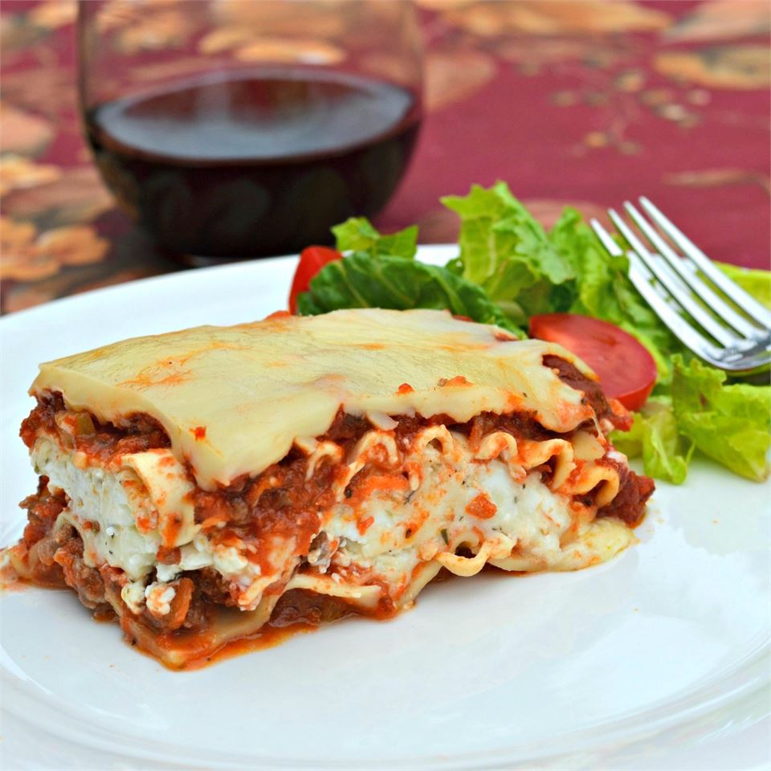

Lasagna

Classic and Simple Meat Lasagna
This lasagna with ground beef and whole wheat noodles is an easy, yet hearty family-pleasing dish.
Ingredients
- whole wheat lasagna noodles
- 1 pound lean ground beef
- 2 cloves garlic, chopped
- 1 teaspoon dried oregano, or to taste
- ½ teaspoon garlic powder
- salt and ground black pepper to taste
- 1 (16 ounce) package cottage cheese
- ½ cup shredded Parmesan cheese
- 2 eggs
- 4½ cups tomato-basil pasta sauce
- 2 cups shredded mozzarella cheese